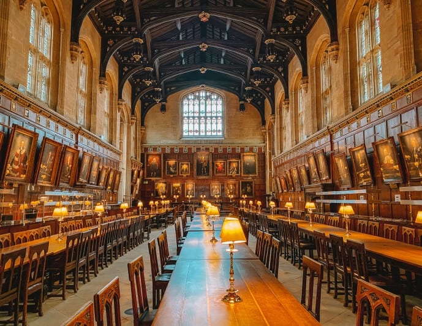

Oxford University

Oxford's historic buildings helped shape the look of the Hogwarts vibe, and several appear in the films.
Places to Visit
| Place | Connection |
|---|---|
| Christ Church | Dining hall and staircase linked to Hogwarts |
| Divinity School | Appears as the Hogwarts infirmary |
Visitor information: University of Oxford.